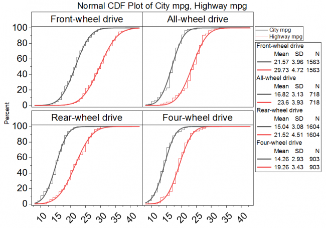
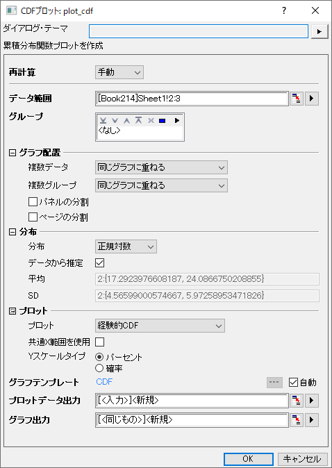

CDFプロット
CDF-Plot

要求されるデータ
経験的CDFプロットおよび／または理論的CDFプロットを作成するには、少なくとも1列を選択してください。
複数のデータとグループ列を選択して、異なるデータ/グループの累積分布を比較します。
グラフ作成
データを選択します。
メニューから、プロット > 統計：CDFプロットを選択して、plot_cdfダイアログを開きます。

ダイアログの設定
| データ範囲
|
入力データ列を選択します。
|
| グループ
|
グループ化列を選択します。
|
| グラフ配置
|
プロットの配置方法を選択します。
- 複数データと複数グループ：このオプションを使用すると、プロットは次の方法で配置されます。
- すべて重ね合わせる: 複数データと複数グループの両方で、同じグラフ上でオーバーラップを選択します。
- 重ね合わせグループ、別レイヤの変数：複数データ=別のレイヤ、複数グループ=同じグラフ上でオーバーラップします
- 重ね合わせ変数、別レイヤグループ：複数グループ=個別レイヤ、複数データ=同じグラフ上でのオーバーラップ
- 別レイヤ：複数データと複数グループの両方が個別のレイヤを選択
- ページの分割：このチェックボックスをにチェックをつけると、別のグループ化列を選択して、グラフを複数レイヤに分割できます。
- Note: 複数データと複数グループの両方が別レイヤに設定されている場合、結果シートのレイヤの順序は、「入力データによる」→「パネルの分割」→「グループによる」の階層に従います。
- ページの分割：このチェックボックスをオンにすると、別のグループ化列を指定して、入力データを分割し、異なるグラフページにCDFプロットを作成できます。各ページには、同じページ関連グループに属する列だけがプロットされます。ページに関連するグループ情報は、レイヤータイトルにカンマ区切りで表示されます（複数因子がある場合）。レポート用のグラフシートには、すべてのページが一覧表示されます。
|
| 分布
|
- 分布: 累積分布確率を計算する分布タイプを指定します。ここでは、正規分布、 対数正規分布、ワイブル分布、 指数分布、 ガンマ分布の4種類がサポートされています。
- データから推定：入力データからパラメータ値を推定します。チェックボックスをオフにすると、各分布関数のパラメータ値をこのチェックボックスの下に入力できます。
|
| プロット
|
- プロット: プロットするCDFプロット、経験的CDF、理論的CDF、またはその両方を選択します。
- 共通X範囲を使用：デフォルトではチェックされていません。チェックを入れると、すべてのプロットのXの最小値と最大値が検索されます。プロットのX範囲が狭い場合は、プロットの最後に最小値または最大値が追加されます。
- Yスケールタイプ：パーセント（デフォルト、0-100）および確率（0-1）
|
| プロットデータ出力
|
プロットデータを出力するシートを指定します。
|
| グラフ出力
|
結果グラフを出力するシートを指定します。
|
テンプレート
CDF.OTPU (Originのプログラムフォルダにインストールされています)
ノート
CDFプロット（正式名称は累積分布関数プロット）は、サンプルデータの分布を調べるために使用されます。データの経験的および理論的累積分布関数を示します。複数のソースデータとそのグループをどのように配置するかを決定することができます。そして、各データのグループごとの分布情報の値（mu、シグマ、N）は自動的に結果グラフに出力されます。